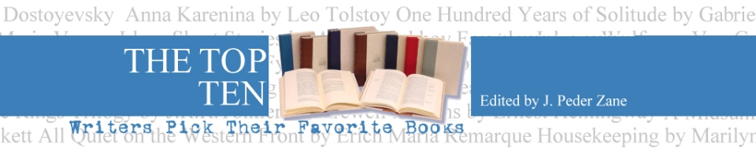

<ion-view hide-nav-bar="false" view-title="Information about the App" class="home padding">

	  <ion-pane class="home padding">
	    <div class="card center">
			
	    </div>
	    <h2>About the App</h2>
	    <p>This is a mobile application that retrieves content from the website named "The Top Ten Books" - where famous authors list their 
	    choices for the top ten books of all time.  Each author's list is ranked from 1 to 10.  There is also a feature where the full list of
	    all the top ten books, from all the authors are ranked.  If a particular book occurs in the lists of more than one author then it will get
	    more points.  Obviously, many famous authors are going to list books in their top ten list that do not appear in any other author's list.</p>

	    <p>I'll let the website itself describe in greater depth how this ranked list of all the books is created.</p>
        <p>The site itself is edited and maintained by Peter Zane.</p>
	        
        <h2>{{title}}</h2>
        <div ng-bind-html="body"></div>

	          <p>Application developed by Bruce Whealton, dba <a href="http://futurewavewebdevelopment.com/">Future Wave Web Development</a></p>
	  </ion-pane>
</ion-view>